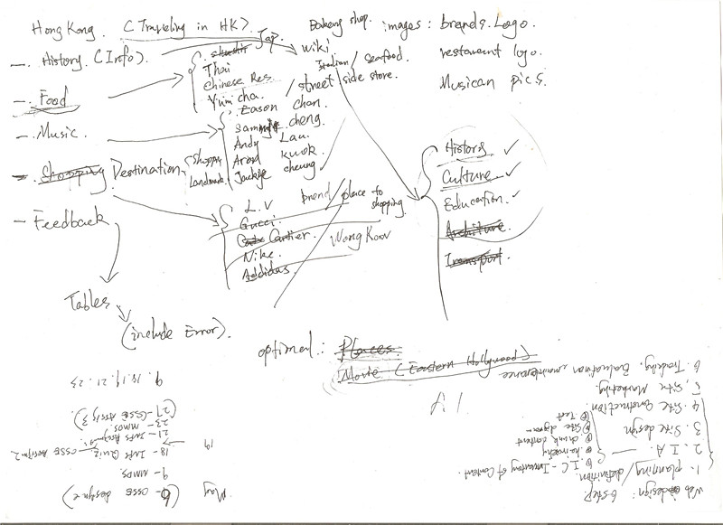
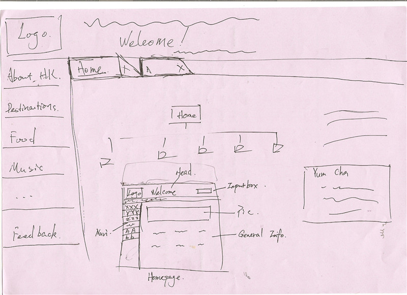
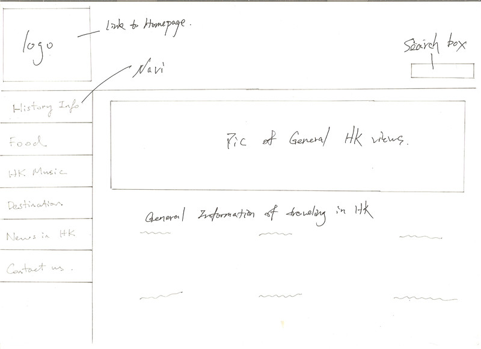
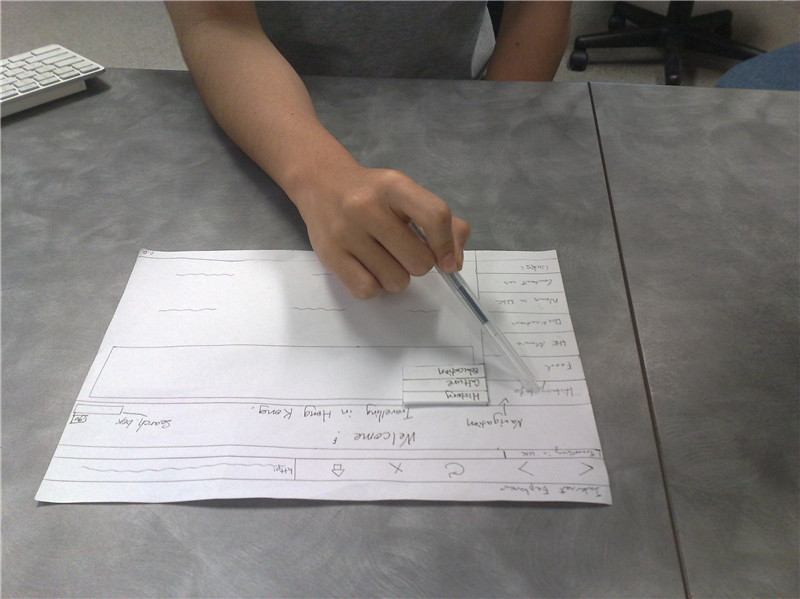
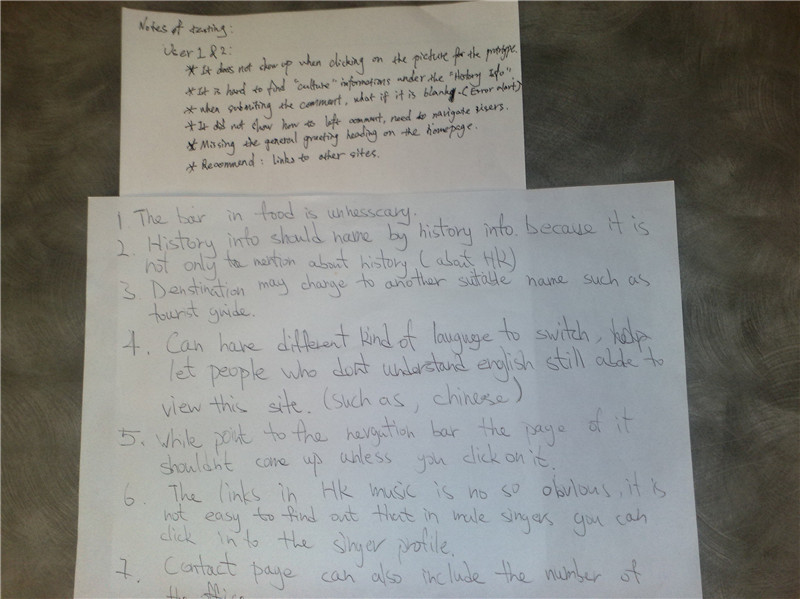

- Goals of the assignment were acknowledged.
- Team¡¯s thorough ideas based on our interests lead our direction of thinking.
- To solve a problem and obtain a result the most logical ways were approved.
- The relativities of our theme were taken into account.
Therefore, again, the goal of our website is to help our targeted website user to find out the information they desired, the proposed website idea should be orientated to a clear, succinct travelling guide website, moreover, our design was produced in terms of the research of their website examples, (i.e. Ourbrisbane.com, Discover Hong Kong), the examples show the common aspect of how to organise the website, unique aspects were also presented on the sites. After that the content inventory and card sort process helped us to organise the sitemap and navigation plan, then the initial prototypes were created successfully by generating several scenarios. The scenarios should reach the most specific aspects of the whole website design in order to help us to improve our design by doing the evaluation session.
Sketch ideas



In the evaluation process of the design, the most significant aspects are giving the control to the user when they testing the prototypes based on the scenarios. Note taken was also a necessary method to improve the design because users can find out the problems and give useful suggestions impersonally, so that our design would not be limited by the designers¡¯ subjective factors.
Evaluaton

Note taken

{kind=link}
{kind=link}
{kind=link}
{kind=link}
{kind=link}